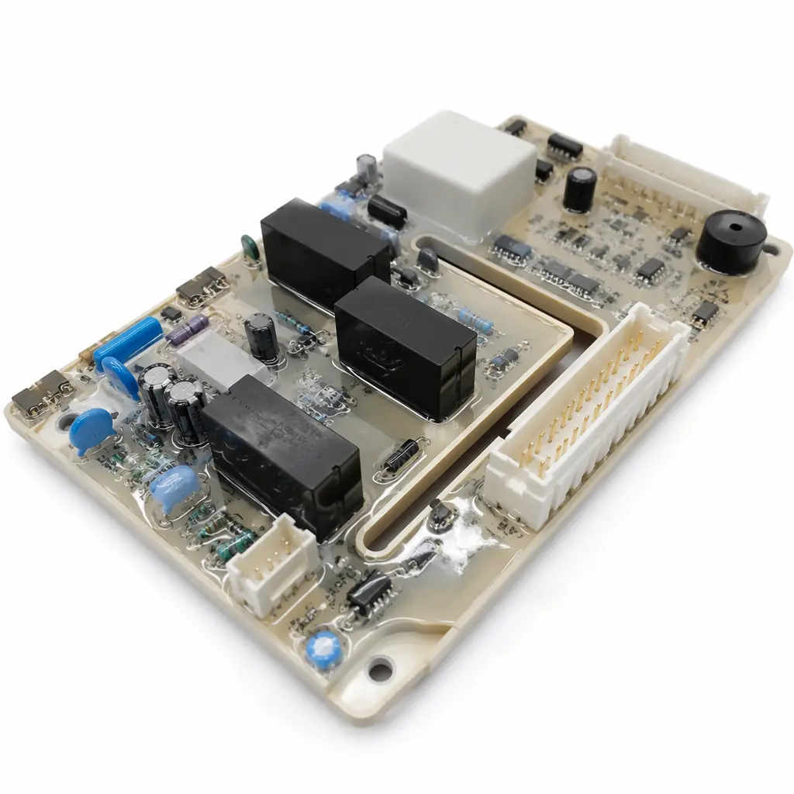
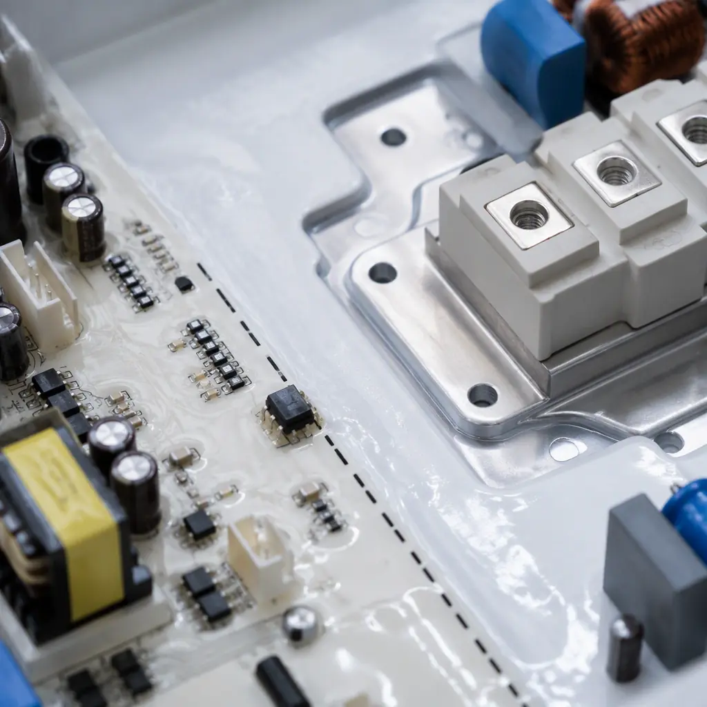

The global home appliance PCB market surpassed $8.2 billion in 2025, driven by the "smart appliance" transition — every new washing machine, refrigerator, and microwave now contains at least one microcontroller-based control board. This is a fundamentally different PCB category from automotive or industrial electronics. The cost pressure is intense (a washing machine control board may have a BOM target under $12), yet the reliability requirements are severe: 10+ year expected lifetime, operation in condensing humidity, exposure to 120-240VAC mains voltage, and compliance with IEC 60335-1 household appliance safety standards.
At Huaxing PCBA, we manufacture control boards for home appliance OEMs across washing machines, refrigerators, microwave ovens, air conditioners, and dishwashers. The key to success in this category is not just PCB fabrication quality — it's understanding the specific failure modes of each appliance type and designing the board to prevent them. This guide covers design requirements for the four most common appliance categories, plus the cost optimization strategies that make consumer price points achievable.

By Appliance: PCB Requirements at a Glance
| Appliance | Key PCB Functions | Critical Challenge | Typical Layer Count |
|---|---|---|---|
| Washing Machine | Motor inverter (BLDC), water valve control, door lock, display/touch | Condensation + vibration + 230VAC at motor drive | 2-4 layers |
| Refrigerator | Compressor inverter, defrost heater, temp sensors, display, ice maker logic | Continuous 24/7 operation, compressor inrush current | 2-4 layers |
| Microwave Oven | HV transformer control, magnetron drive, turntable motor, keypad/display | 2kV+ isolation between LV control and HV section | 2 layers (with isolation slots) |
| Dishwasher | Pump motor, heating element, water softener valve, turbidity sensor, display | Highest humidity + detergent chemical exposure | 2-4 layers |
| Air Conditioner | Compressor inverter, fan motor, temperature/humidity sensors, IR/WiFi receiver | Outdoor unit: -20°C to +60°C ambient, IPX4 rating | 2-4 layers |
High-Voltage Isolation: The Non-Negotiable Design Rule
Every home appliance PCB that switches mains voltage — which is nearly all of them — must maintain safe isolation between the low-voltage control section (3.3V/5V microcontroller domain) and the high-voltage power section (120/230VAC). A failure here is not a warranty return — it's a safety incident.
Creepage and Clearance Distances per IEC 60335-1
Creepage (along surface) and clearance (through air) are separate requirements. For reinforced insulation at 230VAC working voltage with Pollution Degree 2 (typical for appliance interiors), the minimum creepage distance is 5.0mm and minimum clearance is 3.0mm. This must be maintained between any LV trace and any HV trace — including in inner layers if they overlap vertically. Use an isolation slot (a routed slot in the PCB) to guarantee creepage distance across the board surface. Our high-voltage PCB design guide covers isolation requirements in detail.
Triac and Relay Driver Circuit Layout
Home appliances switch AC loads through triacs (for variable power control, e.g., motor speed) or relays (for on/off loads, e.g., heating elements). The triac gate drive must be isolated from the microcontroller — typically via an opto-triac (MOC3021 series) or a digital isolator. The optocoupler provides the physical isolation barrier. Place the optocoupler so that LV and HV sides are separated by the isolation boundary, with no copper pour crossing underneath the component. Relays should have flyback diodes across the coil and snubber networks (resistor + capacitor) across the contacts to suppress arcing noise that couples back into the microcontroller.
Microwave Oven: Special High-Voltage Requirements
Microwave oven control boards face the most severe isolation challenge: the magnetron operates at 4kV peak, generated by a step-up transformer on the same PCB assembly. The HV section must be completely physically separated from the LV control section with at least 8mm creepage and an isolation slot. The HV capacitor (typically 0.8-1.2µF, 2100VAC) must have a dedicated bleed resistor for safety. These boards are single-sided or double-sided only — multilayer construction risks internal delamination under the HV stress that standard hipot testing at 1500VAC may not catch.
Safety Requirement: Every appliance PCB must pass hipot testing at the end of the production line. For 230VAC appliances with reinforced insulation: 3000VAC for 1 second between LV and HV sections. This is not a sample test — 100% of boards must pass. Any PCB design that can't reliably pass hipot at production volumes needs a layout revision before mass production begins.

Environmental Protection: Moisture, Condensation, and Chemical Exposure
Home appliances operate in environments that are brutal for electronics. A washing machine PCB lives inside a sealed but condensation-prone housing. A refrigerator control board cycles between cold (compressor on) and ambient (defrost) temperatures daily, accumulating moisture through condensation. A dishwasher board faces both humidity and alkaline detergent mist.
Conformal Coating: Silicone for Humid Environments
Acrylic conformal coating (the standard for most electronics) is not sufficient for washing machines and dishwashers. Use silicone-based conformal coating (IPC-CC-830B Type SR) for appliances with condensing humidity. Silicone provides better moisture resistance and remains flexible over temperature cycles, preventing the micro-cracks that acrylic coatings develop after repeated thermal cycling. Apply at minimum 75µm thickness with inspection under UV light for coverage verification. For a comparison of coating types, see our conformal coating selection guide.
PCB Surface Finish: ENIG for Corrosion Resistance
HASL (hot air solder leveling) is the cheapest surface finish but performs poorly in humid environments — the exposed copper at the solder mask edge corrodes over time, causing creep corrosion that can bridge adjacent pads. For appliance PCBs, specify ENIG (electroless nickel immersion gold) which provides a complete barrier against copper migration. The cost adder is roughly $0.30-0.50 per board for standard appliance board sizes — well worth it for a 10-year reliability improvement. Our surface finish selection guide covers the tradeoffs in detail.
Connector Sealing and Wire Routing
The most common failure point on appliance PCBs is not the PCB itself — it's the connectors. Unsealed connectors wick moisture along the wire strands into the PCB header, causing electrolytic corrosion of the connector pins. Specify sealed connectors (IPX4 minimum) for any connection exposed to the appliance interior environment. For wire-to-board connections, use connectors with integral silicone seals or specify potting of the connector backshell after harness assembly. This single design choice eliminates roughly 40% of field failures on washing machine and dishwasher control boards.
Cost Optimization for High-Volume Production
Home appliance PCBs are produced in volumes of 100,000 to 1,000,000+ units per year. At these volumes, every cent of BOM cost matters. The challenge is reducing cost without compromising the safety and reliability requirements above.
| Cost Driver | Standard Approach | Optimized Approach | Savings per Board |
|---|---|---|---|
| PCB material | FR-4, Tg 140°C | FR-4, Tg 130°C (sufficient for ≤105°C operating) | $0.15-0.30 |
| Board thickness | 1.6mm | 1.2mm (acceptable for boards <100×100mm) | $0.10-0.20 |
| Panel utilization | Standard panel 18×24" | Custom panel with ≥85% utilization | $0.20-0.50 |
| Microcontroller | 32-bit ARM Cortex-M | 8-bit MCU for simple control; 32-bit only if needed | $0.50-1.50 |
| Display interface | Custom LCD | Standard 7-segment LED or commodity TN LCD | $1.00-3.00 |
| Conformal coating | Full board spray | Selective coating on HV and exposed areas only | $0.05-0.15 |
Beyond component selection, the biggest cost lever is panel utilization. A PCB designed with the panel dimensions in mind — with nested shapes that maximize the number of boards per panel — can reduce the per-board fabrication cost by 15-25%. Our panel utilization guide covers the mathematics and design rules. For general cost reduction strategies, see our PCB cost factors guide.
Procurement Tip: When quoting appliance PCBs at 100K+ annual volumes, negotiate based on panel cost, not per-board cost. A panel that yields 12 boards vs 10 boards from the same raw material size reduces your per-board cost by 17% — and that saving compounds across a million units.
Testing and Certification for Appliance PCBs
Appliance PCBs face a testing regime that goes beyond standard electronics. The end product (the complete appliance) must pass IEC 60335-1 safety certification, and the PCB is a critical component in that certification. OEMs should require these PCB-level tests before approving a supplier:
100% ICT or Flying Probe — Not Sample-Based
At appliance volumes, a 0.5% defect rate means 5,000 defective boards per million. Sample-based testing is unacceptable. Every board must pass in-circuit test verifying: all power rails at correct voltage, all isolation barriers intact (resistance ≥100MΩ between LV and HV), relay and triac switching at rated load, and all sensor inputs responding correctly. Our PCB testing methods guide covers the test strategy in detail.
Hipot Testing: 100% of Boards
As noted above, every board must pass hipot between LV and HV sections. The test voltage depends on the appliance category and insulation type but is typically 1500-3000VAC for 1 second with leakage current below 5mA. A hipot failure is a board reject — do not attempt repair. The isolation barrier, once compromised, cannot be restored to original safety integrity.
Environmental Stress Screening: Burn-In for Early Failures
For premium brand appliances (Bosch, Miele, Sub-Zero class), consider a 4-8 hour burn-in at 50°C with power applied and functional cycling. This screens for infant mortality failures before the board leaves the factory. The cost adder is roughly $0.50-1.00 per board — which is trivial compared to the brand damage and warranty cost of a field failure. Our burn-in testing guide covers the methodology.
Summary: The Appliance PCB Specification
When issuing an RFQ for home appliance control boards, include these mandatory requirements:
Fabrication: FR-4, Tg ≥130°C, 1.2-1.6mm thickness, ENIG surface finish, 2-4 layers as required, isolation slots between LV and HV sections per IEC 60335-1 creepage tables.
Assembly: Lead-free SAC305 solder, silicone conformal coating (≥75µm) for humid-environment appliances, sealed connectors (IPX4 minimum on all external connections).
Testing: 100% AOI + ICT/flying probe, 100% hipot (1500-3000VAC per design), functional test with rated load switching, optional burn-in per OEM requirements.
At Huaxing PCBA, we produce appliance control boards at volumes from 5,000 prototype runs to 500,000+ annual production, with automated conformal coating, 100% AOI and ICT testing, and full traceability per IPC-1782. Contact our engineering team with your control board design for a DFM review and volume quotation within 24 hours.